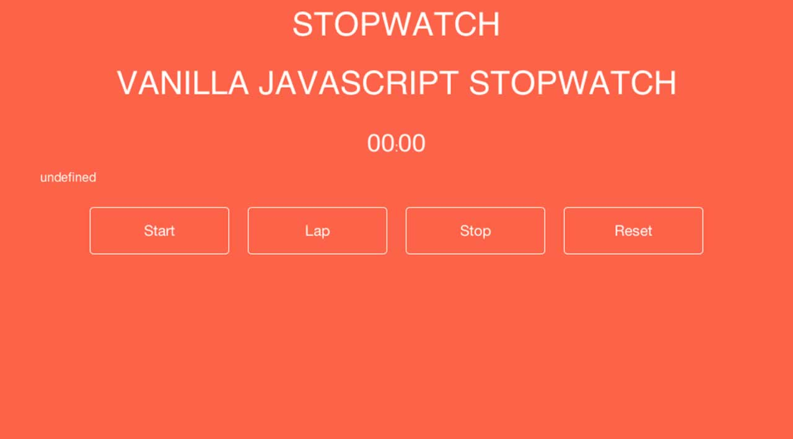
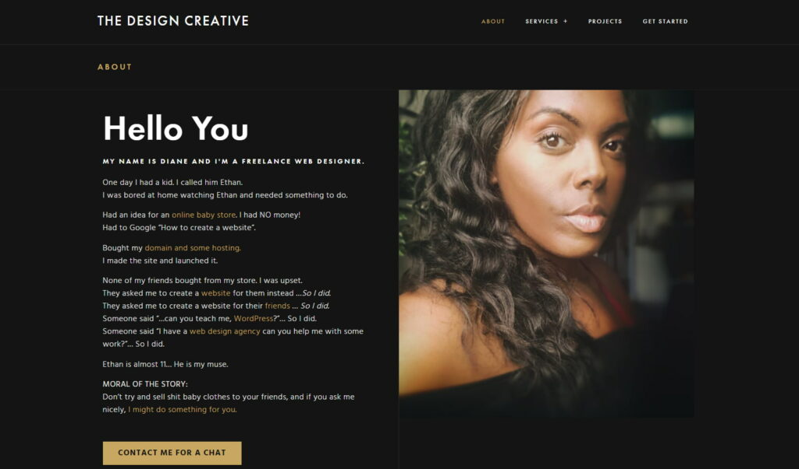

view my projects here

desire to be tomorow.
We all have a history, a telltale
of events, decisions,
choices an
Building sustainable ICT structures
in Zimbabwe and

Building sustainable ICT structures
in Zimbabwe and Africa at large.
This article seeks to explore ways
in which we can improve the practicality an

Building sustainable
in which we can improve the practicality an